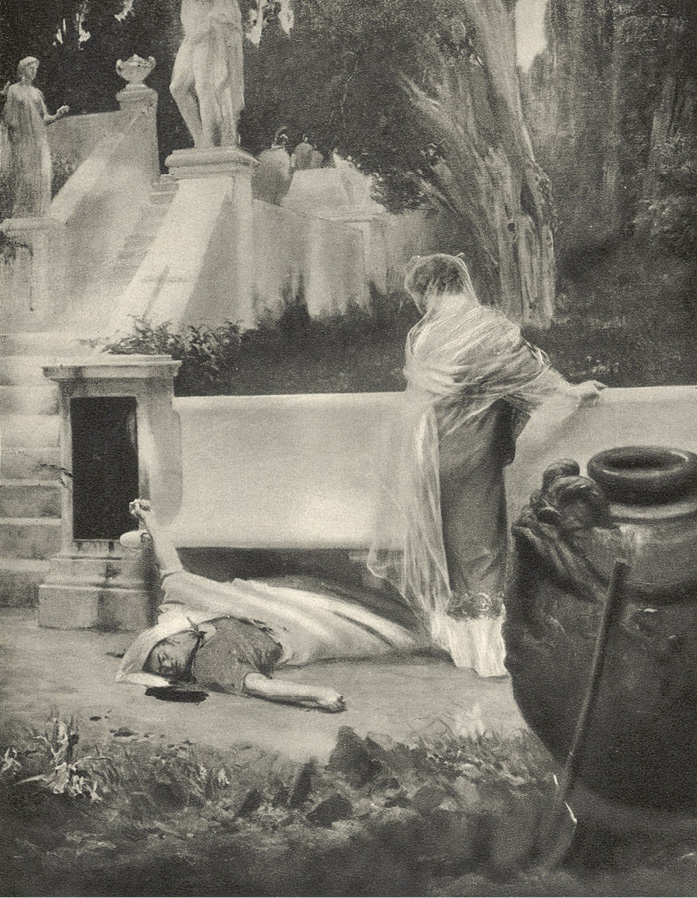

Doslov
Z počátku se vzbouření gallských legií pod vůdcovstvím Vindexovým1 nezdálo býti příliš hrozivé. Caesarovi bylo teprve jedenatřicet let a nikdo se neodvažoval doufati, že by svět již tak záhy měl býti zbaven dusící jej můry. Bylo si připomínáno, že mezi legiemi již nejednou, ještě za dřívějších dob, docházelo ke vzpourám, které však míjely, nemajíce za následek změny v panování. Tak za Tiberia potlačil vzbouření panonských2 legií Drusus a porýnských Germanikus. „Kdo by ostatně mohl,“ říkali lidé, „převzíti po Neronovi vládu, když téměř všichni potomci božského Augusta pohynuli za jeho panování?“ Jiní dívajíce se na kolosy, představující jej jako Herkula, mimoděk si představovali, že žádná moc nezlomí takové síly. Byli tací, kteří od té doby, co odjel do Achaie, tesknili po něm, poněvadž Helius a Polithetes, jimž zanechal správu Říma a Itálie, vládli ještě krvavěji nežli on.
Nikdo si nebyl jist životem ani jměním. Právo přestalo chrániti. Zhasla lidská důstojnost i šlechetnost, uvolnila se rodinná pouta a zubožená srdce ani se neodvažovala připustiti naději. Z Řecka docházely ozvěny o neslýchaných triumfech Caesarových, o tisíci korunách, jichž dobyl, a o tisících soupeřích, nad nimiž zvítězil. Svět se zdál jedinou orgií, krvavou a šaškovskou, ale zároveň vstřebal se názor, že nastal konec počestnosti a věcí vážných, že přišla doba tance, hudby, prostopášnosti, krve, a od nynějška že již musí život takto ubíhati. Sám Caesar, jemuž vzpoura otvírala cestu k novému loupežení, nevalně se staral o vzbouřené legie a Vindexe, ano projevoval často svoji radost nad tím. Nechtěl proto také z Achaie odjeti a teprve, když mu Helius sdělil, že další odklad může jej připraviti o říši, vydal se do Neapole.
Tam opět hrál a zpíval, pouštěje mimo sluch pověsti o stále hrozivějším průběhu událostí. Marně mu Tigellinus vysvětloval, že dřívější vzpoury legií neměly vůdce, kdežto nyní že stojí v čele muž, pocházející z bývalých králů aquitanských3 a kromě toho slavný a zkušený válečník. – „Zde mne poslouchají Řekové,“ odpovídal Nero, „kteří jediní dovedou poslouchati a jediní jsou hodni mého zpěvu.“ Řekl, že jeho první povinností jest umění a sláva. Ale když konečně došla ho zpráva, že Vindex jej prohlásil za chatrného umělce, vzchopil se a odjel do Říma. Rány, které mu způsobil Petronius a které zhojil pobyl v Řecku, otevřely se v jeho srdci nanovo i chtěl hledati u senátu spravedlnost za to, že mu bylo tak neslýchatelně ublíženo.
Spatřiv cestou skupinu, která byla ulita z bronzu a představovala gallského bojovníka, přemoženého římským rytířem, považoval to za šťastné znamení a od té chvíle, vzpomenul-li si na vzbouřené legie a Vindexe, učinil tak jedině proto, aby se jim vysmál. Jeho vjezd do města překonal vše, co dosud bylo viděno. Vjel na témž voze, na němž kdysi Augustus slavil triumf. Byl zbořen jeden oblouk cirku, aby umožněn byl průvodu průchod. Senát, rytíři a nepřehledné davy vyhrnuli se k jeho uvítání. Hradby se otřásaly jásotem: „Buď vítán, Auguste! Buď vítán, Herkule! Buď vítán, božský, jediný, olympský, pythický, nesmrtelný!“ Za ním byly neseny dobyté věnce, názvy měst, v nichž triumfoval, a na deskách napsaná jména mistrů, nad nimiž zvítězil. Nero sám byl opojen a ptal se vzrušen Augustianů, kteří jej obklopovali: Čím byl triumf Caesarův proti jeho triumfu? Myšlenky, že se kdokoli ze smrtelníků opovážil zvednouti ruku na takového mistra poloboha, nedovedl si v hlavě představiti. Opravdu se cítil olympským a tím také bezpečen. Nadšení a třeštivost davů podněcovaly třeštivost jeho vlastní. Mohlo se také zdáti v den tohoto triumfu, že nejen Caesar a město, nýbrž i celý svět že pozbyl rozumu.
Pod kvítím a hromadami věnců nedovedl nikdo spatřiti propast. Nicméně ještě téhož večera pokryly se sloupy a zdi chrámů nápisy, ve kterých byly uvedeny Caesarovy zločiny, vyhrožováno mu blízkou pomstou a posmíváno se mu jako umělci. Od úst k ústům kolovala věta: „Tak dlouho zpíval, dokud nevzbudil kohoutů (gallos)!“ Poplašné pověsti začaly probíhati městem a rostly do příšerných rozměrů. Augustianů se zmocnil nepokoj. Lidé v nejistotě, co ukáže budoucnost, neodvažovali se projevovati přání a nadějí, neodvažovali se ani cítiti, ani mysliti.
On pak žil dále divadlu a hudbě. Zajímaly jej nově vynalezené hudební nástroje a nové vodní dílo, s nímž konány pokusy na Palatině. Ve zdětinštělém a jediné rady nebo činu neschopném duchu si představoval, že daleko do budoucnosti sahajícími úmysly na pořádání představení a podívaných odvrátí nebezpečí. Nejbližší vidouce, že místo aby se staral o prostředky a vojsko, stará se pouze o slova, která trefně vystihovala hrůzu, začali ztráceti hlavu. Jiní naproti tomu se domnívali, že sebe i druhé ohlušuje jen citáty, maje v duši bázeň a nepokoj. Jeho skutky se opravdu staly překotnými. Každého dne tisíce jiných záměrů mu problesklo hlavou. Chvílemi se vzchopoval, aby se rázně postavil nebezpečí v cestu, rozkázal, aby se na vozy nakládaly kytary a loutny, aby mladé otrokyně byly vyzbrojeny jako Amazonky a zároveň aby staženy byly legie od východu. Někdy si zase myslil, že se vzpoura gallských legií neskončí bojem, nýbrž zpěvem. A jeho duše se usmívala na výjev, k němuž asi dojde po uklidnění vojáků zpěvem. Legionáři jej obklopí se slzami v očích, on pak jim zazpívá epinitium4, po němž se pro něho i pro Řím začne zlatá doba. Někdy opět volal po krvi, někdy prohlašoval, že se spokojí svrchovanou vládou v Egyptě; vzpomínal si na věštce, kteří mu předpovídali panování nad Jeruzalémem, nebo se rozcitlivěl při myšlence, že si bude vydělávati na vezdejší chléb jako potulný zpěvák, města i země že nebudou v něm již uctívati Caesara, pána pozemské říše, nýbrž pěvce, jakého dosud nevydalo lidstvo.
A tak sebou zmítal, zuřil, hrál, zpíval, měnil úmysly, měnil citáty, měnil život svůj i světa v jakýsi nesmyslný, fantastický a přitom strašlivý sen, ve vřískavou frašku, skládající se z nabubřelých výrazů, ubohých veršů, vzlykotu, slz a krve, co zatím na západě každým dnem rostlo a mohutnělo mračno. Míra byla dovršena, šaškovská komedie chýlila se patrně ke konci.
Když pověsti o Galbovi5 a o připojení Hispanie6 ke vzpouře dostaly se k jeho sluchu, upadl ve vztek a. zuřivost. Roztříštil poháry, překotil stůl při hostině a vydal rozkazy, jež ani Helius, ani sám Tigellinus neodvážili se vykonati. Vyvražditi Gally, obývající v Římě, potom ještě jednou zapáliti město, vypustiti zvířata z arenarií a přenésti hlavní sídlo do Alexandrie – připadalo mu jako veliký, obdivuhodný i snadný čin. Ale dni jeho všemohoucnosti již minuly a sami společníci jeho dřívějších zločinů začali se na něho dívati jako na šílence.
Smrt Vindexova a nesvornost vzbouřených legií zdály se však opět kloniti misku na váze v jeho prospěch. Byly v Římě ohlášeny zase nové hostiny, nové triumfy a nové rozsudky, když tu jedné noci přicválal na zpěněném koni z tábora praetoriánů rychlý posel, přinášeje zprávu, že v samém městě vztyčili vojáci prapor vzpoury a provolali Galbu caesarem.
Caesar ve chvíli, když posel přibyl, spal, ale probudiv se, marně volal na osobní stráže, jež za nocí bděly u dveří komnat. V paláci bylo již prázdno. Jen otroci drancovali v odlehlejších zákoutích, co se narychlo dalo vydrancovati. Ale jeho zjev je polekal, on pak opuštěn bloudil domem, naplňuje jej výkřiky úzkosti a zoufalství.
Konečně však osvobozenci Faon, Spirus a Epafrodit přispěli mu ku pomoci. Chtěli, aby prchl, tvrdíce, že nezbývá okamžik, aby byl promarněn, ale on ještě se šálil. Což kdyby promluvil k senátu, oděn ve smuteční roucho? Což by senát odolal jeho slzám a výmluvnosti? Kdyby vynaložil všecko krasořečnické umění, všecku výmluvnost i herecké schopnosti, což by kdokoli ve světě byl s to, aby mu odolal? Což by mu nebyla dána aspoň praefektura Egypta?
A oni, uvyklí lichocení, ještě se neodvažovali popírati, pouze jej varovali, že nežli se mu podaří, aby došel na Forum, lid jej roztrhá na kusy, vyhrožovali mu, že nevsedne-li na koně okamžitě, opustí jej i oni.
Faon mu nabízel útočiště ve svém letohrádku, ležícím za branou nomentskou. Za chvíli vsedli na koně, a zahalivše hlavy do plášťů, uháněli na obvod města. Noc bledla. Nicméně na ulicích panoval již ruch, zvěstující neobyčejnou chvíli. Vojáci tu jednotlivě, tu v malých oddílech rozptýlili se po městě. Již nedaleko tábora uskočil Caesarův kůň náhle stranou, uviděv mrtvolu. Tehdy se plášť svezl jezdci s hlavy a voják, jenž vtom okamžiku se ubíral mimo něj, poznal panovníka; ale zmaten nenadálým setkáním s ním, vzdal mu vojenskou čest. Ujíždějíce mimo ležení praetoriánů, zaslechli bouřlivý jásot ku poctě Galbově. Nero konečně pochopil, že se blíží hodina smrti. Zmocnil se ho strach a výčitky svědomí. Řekl, že vidí před sebou tmu v podobě mračna, z onoho mračna pak že se k němu vynořují tváře, v nichž poznává matku, ženu a bratra. Jeho zuby drkotaly zděšením, ale jeho komediantská duše přece jen nalézala jakýsi půvab ve hrůze tohoto okamžiku. Býti vševládným pánem země a ztratiti všecko zdálo se mu vrcholem tragédie. A věren sobě, hrál v ní svoji úlohu až do konce. Zmocnila se ho horečka citátů a vášnivá touha, aby přítomní uchovali je potomstvu. Chvílemi říkal, že chce zemříti, a volal po Spiculovi, který zabíjel nejobratněji ze všech gladiátorů. Chvílemi deklamoval: „Matka, choť i otec mne vyzývají na smrt!“ Záblesky naděje však se v něm občas probouzely, plané a dětinské. Věděl, že jde na smrt a přitom v ni nevěřil.
Nomentskou bránu nalezli otevřenu. Klusajíce dále, přehnali se mimo Ostrianum, kde vyučoval a křtil Petr. Na úsvitě byli v letohrádku Faonově.
Tam již osvobozenci netajili předním déle, že je čas, aby zemřel, a proto si dal pro sebe vykopati jámu a lehl si na zemi, aby si mohli vzíti přesnou míru. Ale při pohledu na vyhazovanou hlínu zachvátil jej strach. Jeho otylá tvář zbledla a na čelo mu naskočily krůpěje potu jako kapky ranní rosy. Začal otáleti. Třesoucím se a přitom hereckým hlasem prohlásil, že okamžik ještě nenadešel, a pak opět začal citovati. Nakonec prosil, aby jej spálili. „Jaký umělec to zmírá!“ opakoval jako v udivení.
Zatím přicválal rychlý posel Faonův se zprávou, že senát již vydal rozsudek a že „parricida“7 má býti potrestán podle dávného obyčeje.
„Jaký je to obyčej?“ ptal se Nero se zbělelými rty.
„Krk ti sevrou do vidlic a usmaží tě k smrti, tělo pak bude vhozeno do Tibru!“ drsně odvětil Epafrodit.
On pak rozhrnul plášť na prsou.
„Nuže, je čas!“ řekl, pohlédnuv na nebe.
A opakoval ještě jednou:
„Jaký umělec to zmírá!“
V tom okamžiku se rozlehl dusot koní. To centurio v čele vojáků cválal pro hlavu Ahenobarbovu.
„Pospěš si!“ zvolali osvobozenci.
Nero si vložil meč na krk, ale bodl se jen bázlivou rukou i bylo patrno, že se nikdy neodváží hluboko vetknouti si hrot. Tehdy mu Epafrodit znenadání vrazil do ruky a meč se vhroužil až po rukojeť. Jemu oči vylezly z důlků, strašlivé, ohromné, zděšené.
„Přináším ti život!“ zvolal centurio, vcházeje.
„Je pozdě!“ odvětil chroptivým hlasem Nero.
Pak dodal:
„Hle, toť věrnost!“
Ve mžiku začala mu smrt obestírati hlavu. Krev z tlustého krku tryskala na zahradní květy jako černý proud. Jeho nohy začaly kopati do země – a pak skonal.
Věrná Akté zaobalila jej nazítří do nádherných látek a spálila na hranici, přeplněné vonnými bylinami.
A tak přešel Nero, jako přechází vichřice, bouře, požár, válka nebo mor, ale basilika Petrova dosud panuje s výšin vatikánských městu i světu.
Vedle bývalé brány kapenské zvedá se dnes maličká kaple s nápisem poněkud setřeným:
Quo vadis, Domine?
%20(21).jpg_
Krev z tlustého krku tryskala na zahradní květy…
Historická osoba, zástupce velitele římských legií, který r. 68 n. l. povstal proti Neronovi. ↩︎
Panonie – starořímská provincie v Podunají. ↩︎
Aquitanie – samostatná starořímská provincie v jihovýchodní části Gallie (nynější Francie, severní Itálie, alpské země). ↩︎
Vítězná píseň. ↩︎
Římský konzul, později správce Aquitanie, Afriky a Hispanie z 1. st. n. l. Stál v čele vzbouřených hispanských legií proti Neronovi. ↩︎
Dnešní Španělsko a Portugalsko. ↩︎
Otcovrah. ↩︎